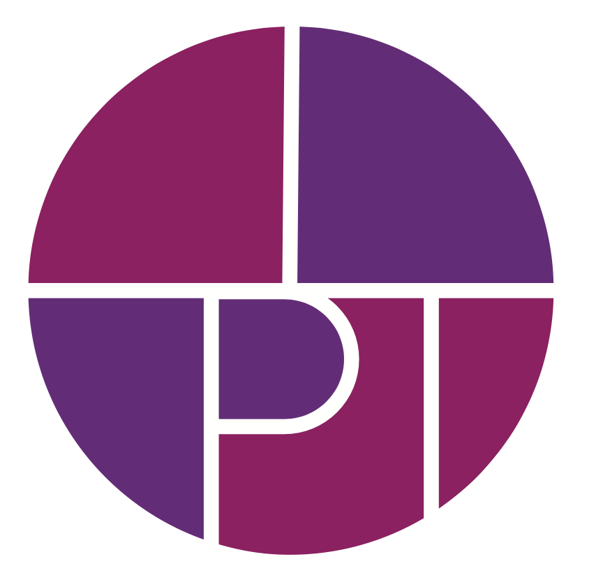

私たちは30年にわたり、独自のブランド構築や文化事業、国際プロジェクトをプロデュースすると共に、次世代への還元として、大学や講演での教育活動を通じて「知の継承」を行ってまいりました。
実務と教育の両輪における全ての活動は、この一語の意味と重さに、ただ一点、向き合い続けるものでした。
知とは、単に消費される情報ではありません。
人間活動における摩耗と不全を排し、歳月を「複利」へと転換する静かなる資産。研ぎ澄まされたインテリジェンスがもたらすのは、一過性の目標達成ではないのです。
本質を見極める精度を極限まで高め、すべての選択と行動に意味と確信を持つこと。それにより、あらゆる「時間の点」を、知的昇華という深化と、経済活動の発展へと変える「構造化」を行う。
最終的には、人間の脳と心の充足をもたらすための「知の資産化」として新しい命を宿し、時代に適した新しいスタイルとなって、人々の間で継承されていくこと。
それこそが、MPIの考える「知の真価」への答えです。
私たちが大切にしているのは、日本人固有の特性や感性を、グローバル市場で機能する「強固な武器」に変えることです。
日本には、類稀なる知的・文化・国際価値の「光」がありながら、目先の経済に翻弄され、資産化されないまま眠っているリソースが数多くあります。それは、改善を「足りないものを探す減点方式」と捉えてしまっているためです。
私たちは「いま、持っているもの」の価値を見極め、資産化する手順と設計を構築し、人間の誇りを守ることを重視しています。
日本国内で正当な評価を得にくいものは、欧米市場で先に評価を確立し、日本・アジアへ逆輸入する。あるいは未開発のリソースを新規プロジェクトへ落とし込み、事業化する。
歳月を味方につけ、知の資産化を体現してきたこれら「実証に基づく個別カスタマイズ戦略」こそが、MPIの一貫した「知の真価」に根ざした活動です。
日常の活動を単なる「処理」として消費し、表面的な合理化で価値を潰してはなりません。既存のパッケージを押し当てるだけのコンサルティングでは、個人と組織に「活気」という名の熱量は生まれないのです。
あらゆる労と時間を、境界や時代を超える「知的資本」へと転換するために。私たちは、時間が経っても、人心が揺らいでも決してブレや浪費を生じさせない「本質の設計」と、個人・法人の羅針盤となる「個別のオリジナル憲法」の確立を最上位に置きます。
国内と国際、職種と業種、学問（勉強）と実務、年齢で分断する経歴や世代。人の脳が作り出した「あてはめと分断」が、現代の閉塞感を生んでいます。国際はすでにデフォルトであり、特別なことではありません。「心に響く」という一点において、マーケットも人間社会も一つなのです。
国際においては、言語変換だけの翻訳型コミュニケーションでは壁を生みます。比較文化に根差さない結果、多国籍な理解と発展が伴わず、通じるのは物理的数字だけという「つまらない会話」になり、持続可能（サステナブル）に継続する絆や信頼が生まれません。
国際コミュニケーションとして、英語を使っても日本の思考に無意識に置き換えたり、立場による断絶が起きたりしないよう、「超言語」の視座で、解釈と思考まで支配されないアプローチを刷新し、視覚表現としてのクリエイティブを導入することで、境界を突破し、新しい価値とチャンネルを創出します。
日本の固定概念や既成通念、価値基準で、大事な価値と誇りを失わない。そのために実務と教育の両面での活動をしてきたことが、30年の歩みであり、MPIの使命です。
Index